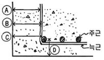
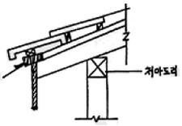
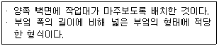
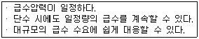

전산응용건축제도기능사 (2015-04-04 기출문제)
1과목: 건축구조
1. 네모돌을 수평줄눈이 부분적으로만 연속되게 쌓고, 일부 상하 세로줄눈이 통하게 쌓는 방식을 무엇이라 하는가?
- 허튼층 쌓기
- 허튼 쌓기
- 바른층 쌓기
- 층지어 쌓기
(정답률: 59%)

2. 기본벽돌(190×90×57)의 1.5B 쌓기 시 두께는? (단, 공간쌓기가 아님)
- 280㎜
- 290㎜
- 310㎜
- 320㎜
(정답률: 87%)
3. 철근콘크리트 사각형 기둥에는 주근을 최소 몇 개 이상 배근해야 하는가?
- 2개
- 4개
- 6개
- 8개
(정답률: 86%)
4. 철골공사 시 바닥슬래브를 타설하기 전에 철골보위에 설치하여 바닥판 등으로 사용하는 절곡된 얇은 판의 부재는?
- 윙플레이트
- 데크플레이트
- 베이스플레이트
- 메탈라스
(정답률: 63%)
5. 다름 그림에서 철근의 피복두께는?

- A
- B
- C
- D
(정답률: 70%)
6. 그림에서 화살표가 지시하는 부재의 명칭으로 옳은 것은?

- 평고대
- 처마돌림
- 당골막이널
- 박공널
(정답률: 50%)
7. 다음 중 인장링이 필요한 구조는?
- 트러스
- 막구조
- 철판구조
- 돔구조
(정답률: 56%)
8. 지반이 연약하거나 기둥에 작용하는 하중이 커서 기초판이 넓어야 할 때 사용하는 기초로 건물의 하부 전체 또는 지하실 전체를 하나의 기초판으로 구성한 것은?
- 잠함기초
- 온통기초
- 독립기초
- 복합기초
(정답률: 86%)
9. 건물의 부동침하의 원인과 가장 거리가 먼 것은?
- 지반이 동결작용을 받을 때
- 지하수위가 변경될 때
- 이웃건물에서 깊은 굴착을 할 때
- 기초를 크게 할 때
(정답률: 81%)
10. 철근콘크리트구조에 사용되는 철근에 관한 설명으로 틀린 것은?
- 인장력에 취약한 부분에 철근을 배근한다.
- 철근의 합산한 총 단면적이 같을 때 가는 철근을 사용하는 것이 부착력 향상에 좋다.
- 철근의 이음길이는 콘크리트 압축강도와는 무관하다.
- 철근의 이음은 인장력이 작은 곳에서 한다.
(정답률: 69%)
11. 고력볼트접합에 대한 설명으로 틀린 것은?
- 고력볼트접합의 종류는 마찰접합이 유일하다.
- 접합부의 강성이 높다.
- 피로강도가 높다.
- 정확한 계기공구로 죄어 일정하고 정확한 강도를 얻을 수 있다.
(정답률: 64%)
12. 선 공장 제작하여 현장에서 짜맞춘 구조이며, 규격화할 수 있고, 대량생산이 가능하고, 공사기간을 단축할 수 있는 구조체의 구성양식은?
- 조립식 구조
- 습식 구조
- 조적식 구조
- 일체식 구조
(정답률: 88%)
13. 철골구조에서 H형강보의 플랜지 부분에 커버플레이트를 사용하는 가장 주된 목적은?
- H형강의 부식을 방지하기 위해서
- 집중하중에 의한 전단력을 감소시키기 위해서
- 덕트 배관 등에 사용할 수 있는 개구부를 확보하기 위해서
- 휨내력을 보강하기 위해서
(정답률: 62%)
14. 철골보에 관한 설명 중 틀린 것은?
- 형강보는 주로 I형강 또는 H형강이 많이 쓰인다.
- 판보는 웨브에 철판을 쓰고 상하부에 플랜지철판을 용접하거나 ㄱ형강을 접합한 것이다.
- 허니컴 보는 I형강을 절단하여 구멍이 나게 맞추어 용접한 보이다.
- 래티스보에 접합판(gusset plate)을 대서 접합한 보를 격자보라 한다.
(정답률: 54%)
15. 건축물 구성 부분 중 구조재에 속하지 않는 것은?
- 기둥
- 기초
- 슬래브
- 천장
(정답률: 72%)
16. 입체 구조 시스템의 하나로서, 축방향만으로 힘을 받는 직선재를 핀으로 결합하여 효율적으로 힘을 전달하는 구조 시스템을 무엇이라 하는가?
- 막구조
- 셸구조
- 현수구조
- 입체트러스구조
(정답률: 70%)
17. 철근콘크리트 보에 관한 설명으로 틀린 것은?
- 단순보는 중앙에 연직 하중을 받으면 휨모멘트와 전단력이 생긴다.
- T형보는 압축력을 슬래브가 일부 부담한다.
- 보 단부의 헌치는 주로 압축력을 보강하기 위해 만든다.
- 캔틸레버 보에는 통상적으로 단면 상부에 철근을 배근한다.
(정답률: 49%)
18. 보강콘크리트블록조의 벽량에 대한 설명으로 틀린 것은?
- 내력벽길이의 총합계를 그 층의 건물면적으로 나눈 값을 의미한다.
- 보강블록구조의 내벽력의 벽량은 15㎝/m2 이상이 되도록 한다.
- 큰 건물에 비해 작은 건물일수록 벽량을 증가할 필요가 있다.
- 벽량을 증가시키면 횡력에 대항하는 힘이 커진다.
(정답률: 77%)
19. 면이 30㎝×30㎝ 정방형에 가까운 네모뿔형의 돌로서 석축에 사용되는 돌은?
- 마름돌
- 각석
- 견치돌
- 다듬돌
(정답률: 50%)
20. 자중도 지지하기 어려운 평면체를 아코디언과 같이 주름을 잡아 지지하중을 증가시킨 구조형태는?
- 절판구조
- 셸구조
- 돔구조
- 입체트러스
(정답률: 72%)
2과목: 건축재료
21. 알루미늄의 주요 특성에 대한 설명 중 틀린 것은?
- 알칼리에 강하다.
- 열전도율이 높다.
- 강도, 탄성계수가 작다.
- 용융점이 낮다.
(정답률: 74%)
22. 구조용 재료에 요구되는 성질과 가장 거리가 먼 것은?
- 재질이 균일하고 강도가 큰 것이어야 한다.
- 색채와 촉감이 좋은 것이어야 한다.
- 가볍고 큰 재료를 용이하게 얻을 수 있어야 한다.
- 내화, 내구성이 큰 것이어야 한다.
(정답률: 84%)
23. 재료의 내구성에 영향을 주는 요인에 대한 설명 중 틀린 것은?
- 내후성 : 건습, 온도변화, 동해 등에 의한 기후변화 요인에 대한 풍화작용에 저항하는 성질
- 내식성 : 목재의 부식, 철강의 녹 등의 작용에 대해 저항하는 성질
- 내화학약품성 : 균류, 충류 등의 작용에 대해 저항하는 성질
- 내마모성 : 기계적 반복 작용 등에 대한 마모작용에 저항하는 성질
(정답률: 81%)
24. 양철판의 구성에 대해 옳게 나타낸 것은?
- 철판에 납을 도금한 것
- 철판에 아연을 도금한 것
- 철판에 주석을 도금한 것
- 철판에 알루미늄을 도금한 것
(정답률: 44%)
25. 파티클 보드의 특성에 관한 설명으로 틀린 것은?
- 칸막이 가구 등에 이용된다.
- 열의 차단성이 우수하다.
- 가공성이 비교적 양호하다.
- 강도에 방향성이 있어 뒤틀림이 거의 일어나지 않는다.
(정답률: 64%)
26. 수지의 종류 중 천연수지계에 속하지 않는 것은?
- 송진
- 셸락
- 다마르
- 니트로셀룰로오스
(정답률: 73%)
27. 다음 방수재료 중 액체상 재료가 아닌 것은?
- 방수공사용 아스팔트
- 아스팔트 루핑류
- 폴리머시멘트 페이스트
- 아크릴고무계 방수재
(정답률: 50%)
28. 목구조에 사용되는 금속의 간결철물 중 2개의 부재접합에 끼워 전단력에 견디도록 사용되는 것은?
- 감잡이쇠
- ㄱ자쇠
- 안장쇠
- 듀벨
(정답률: 68%)
29. 목재가 기건상태일 때 함수율은 대략 얼마 정도인가?
- 7%
- 15%
- 21%
- 25%
(정답률: 82%)
30. 암모니아 가스에 침식되므로 외부 화장실 등에 사용하기 곤란한 금속은?
- 구리(Cu)
- 스테인레스(SS)
- 주석(Sn)
- 아연(Zn)
(정답률: 71%)
31. 미장재료 중 돌로마이트 플라스터에 대한 설명으로 틀린 것은?
- 수축 균열이 발생하기 쉽다.
- 소석회에 비해 작업성이 좋다.
- 점도가 없어 해초풀로 반죽한다.
- 공기 중의 탄산가스와 반응하여 경화한다.
(정답률: 57%)
32. 요소수지에 대한 설명으로 틀린 것은?
- 착색이 용이하지 못하다.
- 마감재, 가구재 등에 사용된다.
- 내수성이 약하다.
- 열경화성 수지이다.
(정답률: 46%)
33. 물체에 외력이 작용되면 순간적으로 변형이 생기지만 외력을 제거하면 원래의 상태로 되돌아가는 성질은?
- 소성
- 점성
- 탄성
- 연성
(정답률: 89%)
34. 재료의 열에 대한 성질 중 착화점에 대한 설명으로 옳은 것은?
- 재료에 열을 계속 가하면 불에 닿지 않고도 자연 발화하게 되는 온도
- 재료에 열을 계속 가하면 열분해를 일으켜 증발가스가 발생하며 불에 닿으면 쉽게 발화하게 되는데 이때의 온도
- 금속재료와 같이 열에 의하여 고체에서 액체로 변하는 경계점의 온도
- 아스팔트나 유리와 같이 금속이 아닌 물질이 열에 의하여 액체로 변하는 온도
(정답률: 51%)
35. 앞으로 요구되는 건축 재료의 발전방향이 아닌 것은?
- 고품질
- 합리화
- 프리패브화
- 현장시공화
(정답률: 73%)
36. 한국산업표준화의 분류 중 토목·건축 부분의 분류 기호는?
- A
- D
- F
- P
(정답률: 89%)
37. 목재의 보존성을 높이고 충해 및 변색 방지를 위한 방부처리법이 아닌 것은?
- 도포법
- 저장법
- 침지법
- 주입법
(정답률: 65%)
38. 겨울철의 콘크리트공사, 해수공사, 긴급 콘크리트공사에 적당한 시멘트는?
- 보통포틀랜드 시멘트
- 알루미나 시멘트
- 팽창 시멘트
- 고로 시멘트
(정답률: 51%)
39. 강화 판유리에 대한 설명으로 틀린 것은?
- 열처리를 한 다음에 절단 연마 등의 가공을 하여야 한다.
- 보통 유리의 3~5배의 강도를 가지고 있다.
- 유리 파편에 의한 부상이 다른 유리에 비하여 적다.
- 유리를 500~600℃로 가열한 다음 특수 장치를 이용하여 급랭한 것이다.
(정답률: 64%)
40. 바닥재를 플로어링 판으로 마감을 할 경우의 수종으로 부적합한 것은?
- 참나무
- 너도밤나무
- 단풍나무
- 마디카
(정답률: 55%)
3과목: 건축계획 및 제도
41. 다음 설명에 알맞은 주택 부엌가구의 배치 유형은?

- L자형
- 일자형
- 병렬형
- 아일랜드형
(정답률: 84%)
42. 주택의 침실에 관한 설명으로 옳지 않은 것은?
- 방위상 직사광선이 없는 북쪽이 가장 이상적이다.
- 침실은 정적이며 프라이버시 확보가 잘 이루어져야 한다.
- 침대는 외부에서 출입문을 통해 직접 보이지 않도록 배치하는 것이 좋다.
- 침실의 위치는 소음원이 있는 쪽은 피하고, 정원 등의 공지에 면하도록 하는 것이 좋다.
(정답률: 88%)
43. 다음 중 소규모 주택에서 다이닝 키친(Dining kitchen)을 채택하는 이유와 가장 거리가 먼 것은?
- 공사비의 절약
- 실면적의 절약
- 조리시간의 단축
- 주부노동력의 절감
(정답률: 61%)
44. 건축제도에서 투상법의 작도 원칙은?
- 제 1각법
- 제 2각법
- 제 3각법
- 제 4각법
(정답률: 81%)
45. 건축법령상 공동주택에 속하지 않는 것은?
- 아파트
- 연립주택
- 다가구주택
- 다세대주택
(정답률: 81%)
46. 색의 3요소에 속하지 않는 것은?
- 광도
- 명도
- 채도
- 색상
(정답률: 81%)
47. 에스컬레이터에 관한 설명으로 옳지 않은 것은?
- 수송량에 비해 점유면적이 작다.
- 대기시간이 없고 연속적인 수송설비이다.
- 수송능력이 엘리베이터의 1/2 정도로 작다.
- 승강 중 주위가 오픈되므로 주변 광고효과가 크다.
(정답률: 83%)
48. 제도용지에 관한 설명으로 옳지 않은 것은?
- A0용지의 넓이는 약 1m2이다.
- A2용지의 크기는 A0용지의 1/4이다.
- 제도 용지의 가로와 세로의 길이비는 √2:1이다.
- 큰 도면을 접을 때에는 A3의 크기로 접는 것을 원칙으로 한다.
(정답률: 77%)
49. 건축물의 에너지절약을 위한 계획 내용으로 옳지 않은 것은?
- 실의 용도 및 기능에 따라 수평, 수직으로 조닝계획을 감소시킨다.
- 공동주택은 인동간격을 좁게 하여 저층부의 일사 수열량을 감소시킨다.
- 거실의 층고 및 반자 높이는 실의 용도와 기능에 지장을 주지 않는 범위 내에서 가능한 낮게 한다.
- 건축물의 체적에 대한 외피면적의 비 또는 연면적에 대한 외피면적의 비는 가능한 작게 한다.
(정답률: 53%)
50. 드렌쳐설비에 관한 설명으로 옳은 것은?
- 화재의 발생을 신속하게 알리기 위한 설비이다.
- 소화전에 호스와 노즐을 접속하여 건물 각 층 내부의 소정 위치에 설치한다.
- 인접건물에 화재가 발생하였을 때 수막을 형성함으로써 화재의 연소를 방재하는 설비이다.
- 소방대 전용 소화전인 송수구를 통하여 실내로 물을 공급하여 소화 활동을 하는 설비이다.
(정답률: 72%)
51. 건축제도의 글자에 관한 설명으로 옳지 않은 것은?
- 숫자는 아라비아 숫자를 원칙으로 한다.
- 문장은 왼쪽에서부터 가로쓰기를 원칙으로 한다.
- 글자체는 수직 또는 30° 경사의 명조체로 쓰는 것을 원칙으로 한다.
- 글자의 크기는 각 도면의 상황에 맞추어 알아보기 쉬운 크기로 한다.
(정답률: 86%)
52. 증기난방에 관한 설명으로 옳지 않은 것은?
- 예열시간이 온수난방에 비해 짧다.
- 방열면적을 온수난방보다 작게 할 수 있다.
- 난방 부하의 변동에 따른 방열량 조절이 용이하다.
- 증발 잠열을 이용하기 때문에 열의 운반 능력이 크다.
(정답률: 59%)
53. 심리적으로 상승감, 존엄성, 엄숙함 등의 조형효과를 주는 선의 종류는?
- 사선
- 곡선
- 수평선
- 수직선
(정답률: 82%)
54. 도면에 척도를 기입해야 하는데 그림의 형태가 치수에 비례하지 않을 경우 표시방법으로 옳은 것은?
- US
- DS
- NS
- KS
(정답률: 66%)
55. 다음과 같은 특징을 갖는 급수방식은?

- 수도직결방식
- 압력수조방식
- 펌프직송방식
- 고가수조방식
(정답률: 51%)
56. 건축도면에서 보이지 않는 부분을 표시하는데 사용되는 선은?
- 파선
- 굵은 실선
- 가는 실선
- 일점 쇄선
(정답률: 79%)
57. 과전류가 통과하면 가열되어 끊어지는 용융회로개방형의 가용성 부분이 있는 과전류보호 장치는?
- 퓨즈
- 캐비닛
- 배전반
- 분전반
(정답률: 84%)
58. 주거공간은 주행동에 의해 개인공간, 사회공간, 가사노동공간 등으로 구분할 수 있다. 다음 중 개인공간에 속하는 것은?
- 식당
- 서재
- 부엌
- 거실
(정답률: 92%)
59. 다음 중 건축설계의 전개과정으로 가장 알맞은 것은?
- 조건파악 - 기본계획 - 기본설계 - 실시설계
- 기본계획 - 조건파악 - 기본설계 - 실시설계
- 기본설계 - 기본계획 - 조건파악 - 실시설계
- 조건파악 - 기본설계 - 기본계획 - 실시설계
(정답률: 86%)
60. 실제 길이를 16m 축척 1/200인 도면에 나타낼 경우, 도면상의 길이는?
- 80㎝
- 8㎝
- 8m
- 8㎜
(정답률: 65%)